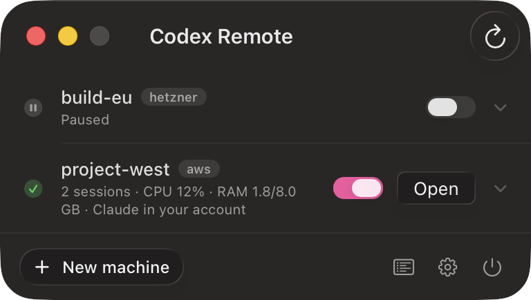
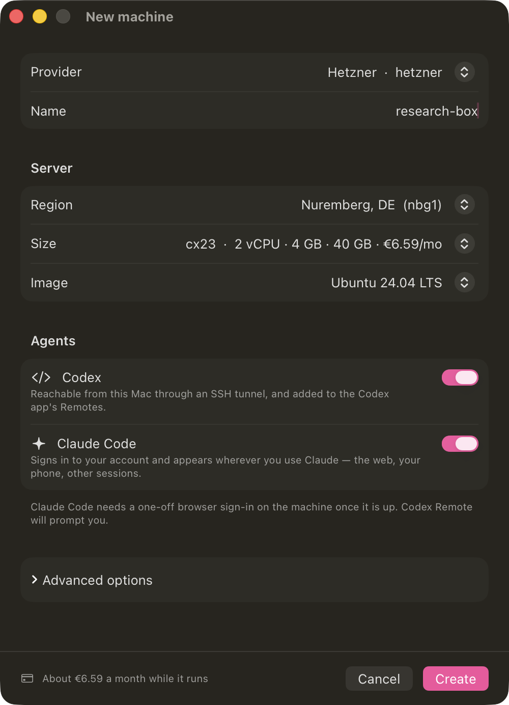
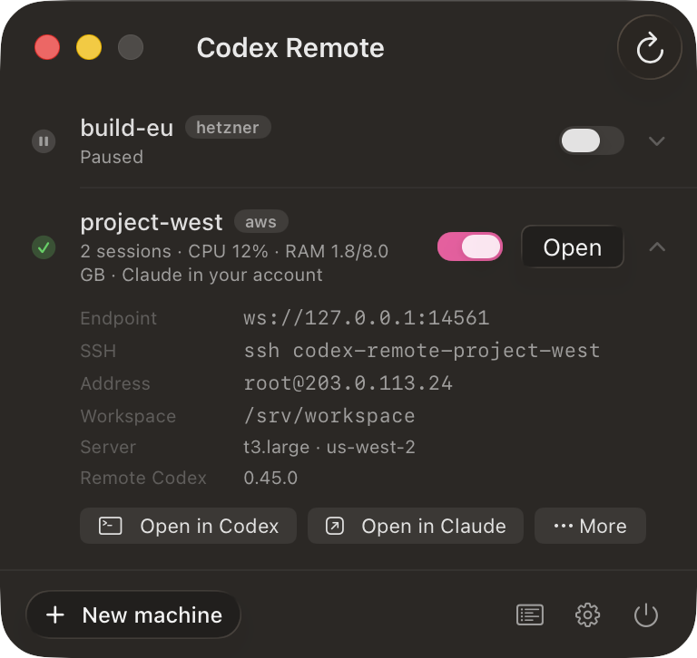
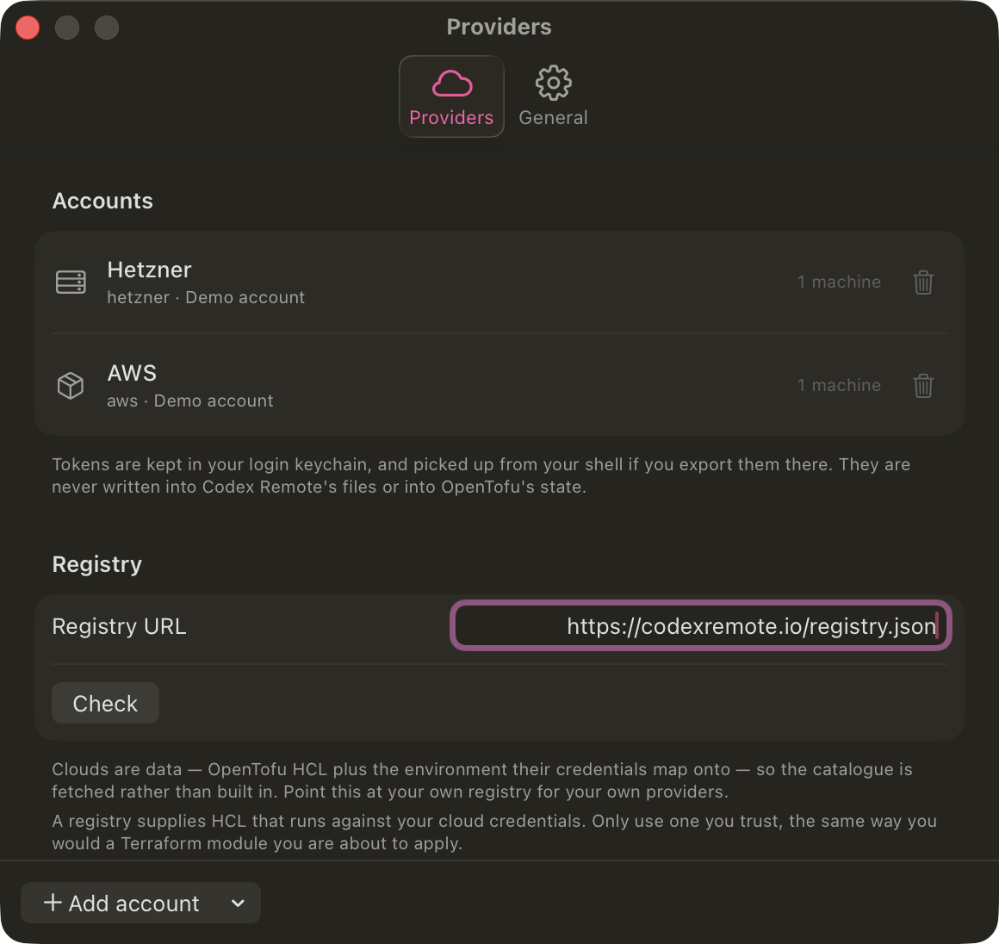
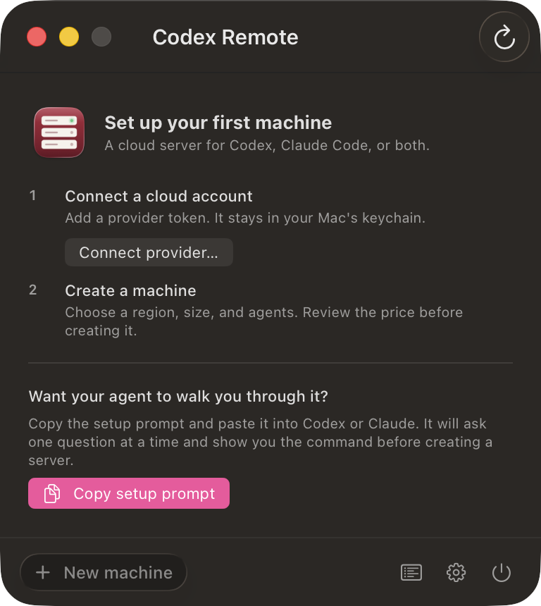

As simple as it gets to put Claude or Codex on a remote machine.
Give it a token for a cloud you already pay for. It builds the server, installs Codex and Claude Code, carries your MCP servers over, and hands the machine to the tools you already work in.
-
Install it$
brew install --cask pandelisz/tap/codex-remote -
Or download itDownload the latest release Unzip and drag it to Applications. The app keeps itself up to date after that.
-
Add a cloud tokenHetzner, AWS, DigitalOcean, Linode, Vultr or Scaleway. It goes to your login keychain, never to a file or to OpenTofu’s state.
-
Press New machineOr hand the job to an agent, which can create and configure machines itself.

Renting a box takes a minute. Making an agent live on one doesn’t.
None of this is hard. All of it is fiddly, none of it is interesting, and you do every bit of it again for the next machine.
Edit ~/.ssh/config and hope
An Include won’t do: Codex parses that file with a library
that never expands them, so a host behind one is invisible and nothing says why.
The block is written where it’s read
Inline, above your Host * so first-match cannot override it,
inside markers it can cleanly remove again.
Install, log in, answer the wizard
Node, the CLI, an OAuth round trip, then a first-run prompt that blocks forever under a service manager because nobody is there to pick a theme.
Bootstrapped and signed in
Wizards pre-answered. Claude Code runs as its own claude
account with its own login — two installs cannot share one refresh token.
Keep a terminal open
Close the lid and lose the session. Reboot the box and find out days later that the agent never came back.
Units, enabled at boot
Everything it installs shares one prefix, so
systemctl status 'codex-remote-*' shows the lot, and a
stop/start brings all of it back.
Leave your project and your tools behind
A clone arrives without the gitignored .env, so the code is all
there and the project still does not run.
Both travel
codex-remote push clones or copies, then sends the untracked
config separately. Portable MCP servers come across with it.
What happens when you add a machine
It creates the server. OpenTofu applies a small per-cloud module and makes one machine with your key on it. Each gets its own state file, so one can never disturb another.
It bootstraps over SSH. Base packages, the Codex CLI at
/usr/local/bin/codex, Claude Code under its own account, your
MCP servers, and a systemd unit for each agent.
It registers the host. A Host codex-remote-<name> block
goes into your SSH config, which is how the Codex app finds a machine and starts
codex app-server on it over SSH.
It connects. Codex picks it up under Connections; Claude Code dials out and appears in your account. Pair it once and the box answers from your phone too.
The whole of it, in five screens
Real app captures with illustrative machine data.




Letting an agent do it
The agent usually knows what it needs better than you do while you are picking from a dropdown. Connect it and it can read your machines; allow more and it can build them.
claude mcp add codex-remote -- codex-remote mcp serve
| Tool | Needs | Does |
|---|---|---|
| list_machines | — | Health, running sessions, CPU and memory |
| list_sizes | — | Regions, sizes and images, with prices |
| run_command | Changes | Any shell command, as root |
| sync_project | Changes | Put a local project on a machine |
| create_machine | Changes | Bills to your cloud account |
| destroy_machine | Destroy | Cannot be undone |
These tools spend money, and an agent calls things in loops. Reading is always
available. Changing is off until you turn it on. Destroying has its own switch,
because creating the wrong machine costs pence and deleting the right one loses
work — and destroy_machine needs the machine’s name
twice, so a name a model produced but never verified fails instead of deleting
something real.
Adding a cloud doesn’t need a release
A cloud is already data: some OpenTofu HCL, the environment its credentials map onto, and the lists that fill the New machine form. So the catalogue is a JSON file fetched at runtime from codexremote.io/registry.json, and adding a provider is a pull request rather than a release.
Point the app at your own registry, under Settings → Providers, and you get your own catalogue: a homelab module, a provider nobody has added yet, or a fork with the packages and volumes your team wants baked in.
HCL can live in its own .tf file, pinned to a SHA-256. That hash is
the point: this HCL runs against your cloud credentials, and without it whoever
serves that URL — or takes the domain over in two years — could change
what gets applied long after the registry was read.
Adding one
No Swift, and no waiting for a release. Start from the registry that ships:
curl -O https://codexremote.io/registry.json
-
Write the entryAn
id, the OpenTofu provider at a pinned version, the credentials to ask for and the environment they map onto, the HCL for one machine, and fallback lists of regions, sizes and images. -
Give the HCL the outputs it owesIt is handed
name,region,size,image,ssh_public_key,ssh_key_ids,user_dataandtags, and must declare at leastinstance_idandpublic_ipv4— without those a machine comes up with no way to reach it. -
Check it before anyone else has to
swift test --filter ProviderRegistryDocumentTestsvalidates the shipped registry, so a malformed entry fails on your machine rather than in review. -
Host it, or send itPoint Settings → Providers at your own copy and it is yours alone — right for a homelab or an internal cloud. Or open a pull request against site/registry.json and every install picks it up on its next refresh, no update needed.
Full format, the HCL contract and what the loader refuses: docs/registry.md · CONTRIBUTING.md